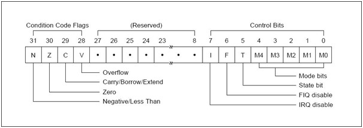

參考資訊：
https://matrix108.wordpress.com/2007/12/15/arm-assembler/
https://perswww.kuleuven.be/~u0068190/ARM7/lpc-ARM-book_srn.pdf
https://www.ic.unicamp.br/~celio/mc404-2013/arm-manuals/ARM_exception_slides.pdf
暫存器

mrs r0, cpsr bic r0, #0x80 msr cpsr_c, r0
Disable Interrupt
mrs r0, cpsr orr r0, #0x80 msr cpsr_c, r0